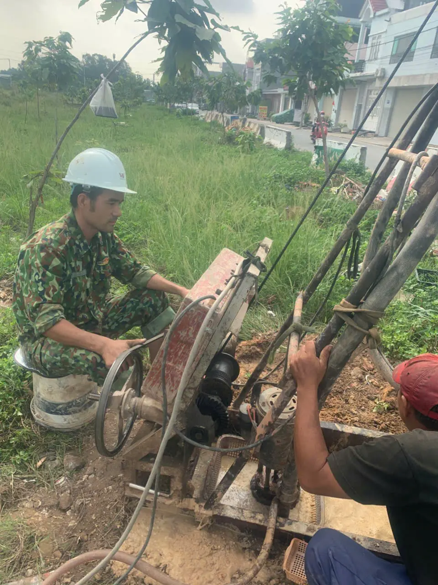
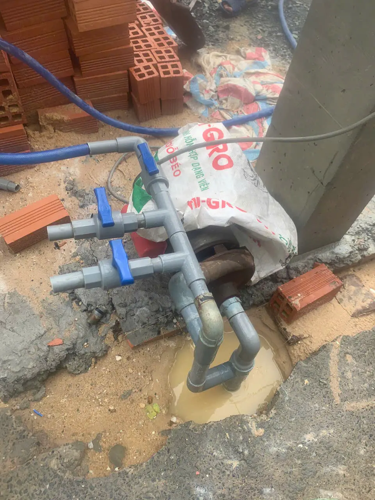
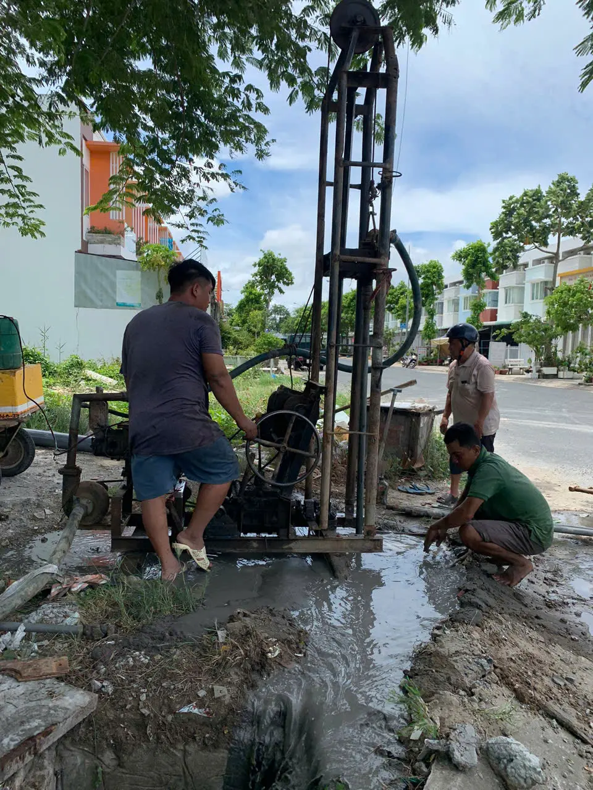
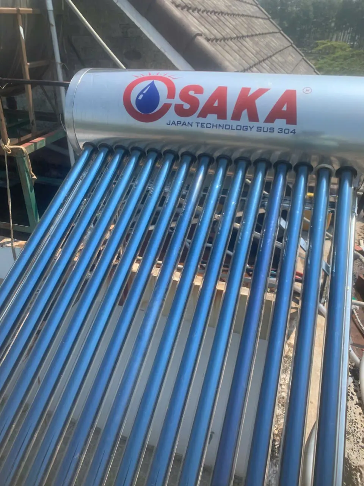
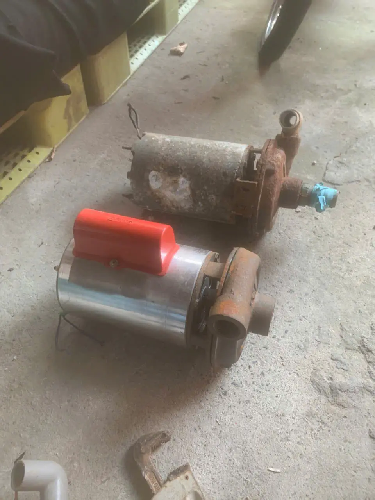
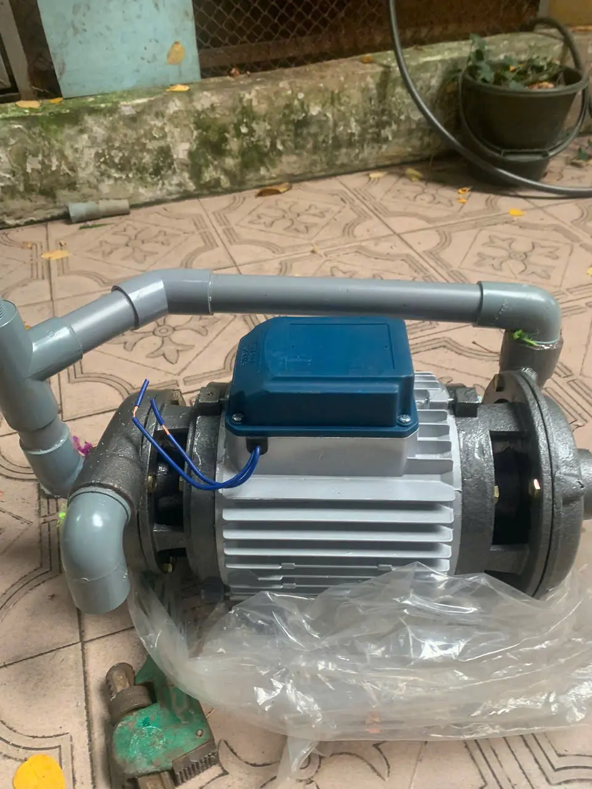

Khoan đúng tầng nước
Giúp gia đình có nguồn nước ổn định, đúng nhu cầu sử dụng và ít phát sinh về sau.
Đức Hậu nhận khoan giếng dân dụng, cải tạo giếng yếu nước, sửa máy bơm không lên nước, sửa bơm tăng áp và xử lý điện nước tại Hóc Môn, Quận 12. Khách được khảo sát rõ lỗi, báo giá trước khi làm và hỗ trợ nhanh khi mất nước sinh hoạt.
Giúp gia đình có nguồn nước ổn định, đúng nhu cầu sử dụng và ít phát sinh về sau.
Khôi phục nước sinh hoạt nhanh hơn với chẩn đoán rõ lỗi, sửa đúng hạng mục cần thiết.
Giảm mùi, giảm cặn, hạn chế rò rỉ và đưa hệ thống về trạng thái vận hành ổn định hơn.
Máy bơm chạy nhưng không lên nước, nước lên rất yếu hoặc bồn không có nước dùng.
Có dấu hiệu rò điện, chập chờn, ống nước rỉ kéo dài hoặc khu vực ẩm ướt bất thường.
Nước lên chậm, có mùi tanh, cặn vàng hoặc hệ lọc cũ không còn xử lý hiệu quả như trước.
Nhà trọ, quán ăn, hộ gia đình hoặc xưởng nhỏ cần khôi phục nước, điện đúng trong ngày.
Nếu bạn đang mất nước, rò rỉ điện nước hoặc cần khảo sát giếng, chọn đúng mục dưới đây sẽ nhanh hơn nói chung chung từ đầu.
Phù hợp khi cần khôi phục nước sinh hoạt nhanh để kịp dùng trong ngày.
Dành cho ca cần kiểm tra nhanh để tránh lan rộng hoặc gián đoạn sinh hoạt.
Dành cho trường hợp cần khảo sát nguồn nước, cải tạo giếng hoặc nâng cấp lọc nước.
Các hạng mục được tách theo đúng nhu cầu tìm kiếm. Nếu cần đúng khu vực, hãy xem trang khoan giếng Hóc Môn, sửa máy bơm nước Hóc Môn hoặc sửa điện nước Hóc Môn.

Khảo sát tầng nước, tư vấn độ sâu và cấu hình ống phù hợp để gia đình có nguồn nước ổn định hơn.

Khôi phục nước sinh hoạt khi máy bơm yếu nước, không lên nước, cháy tụ, hỏng motor hoặc bơm tăng áp đóng ngắt liên tục.

Nước trong hơn, giảm mùi tanh, giảm cặn vàng và dùng sinh hoạt an tâm hơn.

Giảm áp lực tiền điện và có hệ thống thi công gọn, thẩm mỹ, dễ vận hành.

Kiểm tra rò rỉ, chập điện, yếu áp, nghẹt ống và thay thiết bị điện nước hỏng để hệ thống dùng an toàn hơn.

Đường ống gọn hơn, áp lực nước đều hơn và hệ thống thuận tiện cho bảo trì lâu dài.
Khách có thể xem trước cách làm việc, thiết bị sử dụng và hiện trạng công trình thực tế trước khi gọi.
Quy trình này giúp khách biết trước sẽ kiểm tra gì, báo giá ra sao và khi nào có thể bắt đầu làm.
Ghi nhận khu vực, mức độ gấp và dấu hiệu sự cố để ưu tiên đúng ca.
Kiểm tra tận nơi để xác định đúng lỗi, tránh làm dư hạng mục không cần thiết.
Chốt phương án, vật tư và chi phí trước khi bắt đầu để khách dễ quyết định.
Hoàn thiện, test vận hành và bàn giao theo trạng thái khách có thể dùng ngay.
Phần lớn khách gọi vì mất nước, máy bơm hư, rò điện nước hoặc cần khảo sát giếng. Cách làm của Đức Hậu là kiểm tra đúng lỗi rồi mới chốt phương án xử lý.
Ưu tiên chốt đúng nguyên nhân để khách không phải trả thêm cho phần không cần thiết.
Chọn cách làm giúp hệ thống vận hành ổn định và đỡ gọi thợ lặp lại sau đó.
Liên hệ qua hotline hoặc Zalo đều được ưu tiên phản hồi nhanh để giữ tiến độ sinh hoạt.
Đây là những phản hồi gần với các tình huống khách hay gặp nhất: mất nước, giếng yếu nước và rò điện nước trong nhà.
“Nhà đang mất nước buổi tối, gọi xong được hẹn giờ rõ ràng và kiểm tra đúng lỗi tụ máy bơm. Làm gọn, báo giá trước nên tôi rất yên tâm.”
Chị Hạnh Nhà trọ, Hóc Môn“Giếng yếu nước kéo dài, bên Đức Hậu khảo sát lại rất kỹ rồi mới đề xuất phương án. Sau khi làm xong nước lên ổn định hơn hẳn.”
Anh Tuấn Hộ gia đình, Quận 12“Điểm tôi thích là thợ nói dễ hiểu, không ép làm thêm. Rò rỉ điện nước được xử lý nhanh, nhà dùng lại bình thường ngay trong ngày.”
Chị Vy Nhà ở dân dụng, Tân Chánh HiệpƯu tiên hỗ trợ khách tại Tân Chánh Hiệp, Thới Tam Thôn, Xuân Thới Thượng, Xuân Thới Sơn, Đông Thạnh, Bà Điểm, Trung Chánh và các phường giáp Quận 12.
Khoan giếng dân dụng, sửa máy bơm nước Hóc Môn, xử lý nước giếng, lọc phèn và sửa điện nước tại Tân Chánh Hiệp, Thới Tam Thôn, Xuân Thới Thượng, Xuân Thới Sơn, Đông Thạnh.
Hỗ trợ nhanh các sự cố sửa máy bơm nước Quận 12, đường ống, cấp thoát nước và hệ thống nước gia đình.
Nhận khảo sát công trình, báo giá rõ ràng và thi công theo hiện trạng thực tế từng khu vực.
Nhiều khách chỉ thấy một dấu hiệu chung là mất nước, nước yếu hoặc hóa đơn nước tăng bất thường. Khi mô tả đúng hiện trạng ngay từ đầu, thợ có thể chuẩn bị dụng cụ, linh kiện và phương án kiểm tra phù hợp hơn.
| Dấu hiệu khách gặp | Hướng kiểm tra nên ưu tiên |
|---|---|
| Bơm chạy nhưng không lên nước, nước lên yếu hoặc lúc có lúc không. | Kiểm tra máy bơm, tụ, đường hút, van một chiều, mực nước giếng và khả năng mất mồi. |
| Nước giếng có màu vàng, mùi tanh, đóng cặn ở lavabo hoặc bồn chứa. | Khảo sát nguồn nước, nhu cầu sử dụng và phương án lọc phèn, lọc cặn phù hợp. |
| Nhà trọ, quán ăn hoặc hộ gia đình dùng nhiều nước nhưng nguồn hiện tại không đủ. | Khảo sát khoan giếng mới, cải tạo giếng cũ hoặc nâng cấp máy bơm theo lưu lượng thực tế. |
| Tường ẩm, nền rỉ nước, đồng hồ nước quay dù không mở vòi. | Kiểm tra rò rỉ đường ống, khóa van từng nhánh và xử lý điểm rò trước khi phá sửa rộng. |
| Ổ cắm nóng, CB nhảy, máy nước nóng hoặc khu vực nhà tắm có dấu hiệu chập điện. | Ngắt nguồn khu vực nghi ngờ, kiểm tra chống rò, dây dẫn, thiết bị và điểm nối điện. |
Với mỗi ca, Đức Hậu ưu tiên tìm nguyên nhân chính trước khi chốt phương án. Nếu máy bơm yếu vì tụ, van hoặc đường hút, khách chưa cần nghĩ ngay đến khoan giếng mới. Nếu giếng cũ vẫn còn khả năng cải tạo, phương án cải tạo có thể tiết kiệm hơn so với khoan lại từ đầu.
Ngược lại, nếu công trình có nhu cầu dùng nước lớn, giếng cũ cạn kéo dài hoặc nguồn nước hiện tại không ổn định, khảo sát khoan giếng và cấu hình lại hệ thống bơm sẽ hợp lý hơn. Cách làm này giúp khách có phương án rõ: sửa gì trước, chi phí nào bắt buộc, hạng mục nào có thể làm sau.

Giải thích các yếu tố ảnh hưởng tới chi phí khoan giếng như độ sâu, địa chất, cấu hình ống và mục đích sử dụng nước.
Đọc bài giá khoan giếngTổng hợp dấu hiệu thường thấy khi máy bơm dân dụng hoạt động bất thường và thời điểm nên gọi thợ kiểm tra.
Đọc bài máy bơm yếu nướcNhững dấu hiệu nhận biết nước giếng bị phèn, vì sao cần lọc và các hướng xử lý phù hợp với nhu cầu sinh hoạt.
Đọc bài nước giếng bị phènDấu hiệu thường gặp khi đường ống bị rò âm tường như ẩm tường, nước yếu hoặc hóa đơn nước tăng bất thường.
Đọc bài rò rỉ ống nướcNhững dấu hiệu dễ gặp ở khu vực nhà tắm, máy nước nóng hoặc ổ cắm gần nơi ẩm ướt cần kiểm tra sớm.
Đọc bài chập điện nhà tắmNếu bạn đang cần xử lý sớm, 3 câu hỏi dưới đây là những điều khách thường hỏi nhất trước khi chốt lịch.
Nếu cần xem vị trí hoặc chỉ đường đến nơi, bạn có thể mở bản đồ trực tiếp từ đây.
Gọi điện khi cần xử lý gấp, hoặc nhắn Zalo kèm địa chỉ và hình hiện trạng để chốt nhanh hơn.
Ưu tiên xếp lịch cho khách mô tả rõ khu vực và dấu hiệu sự cố ngay trong cuộc gọi đầu tiên.